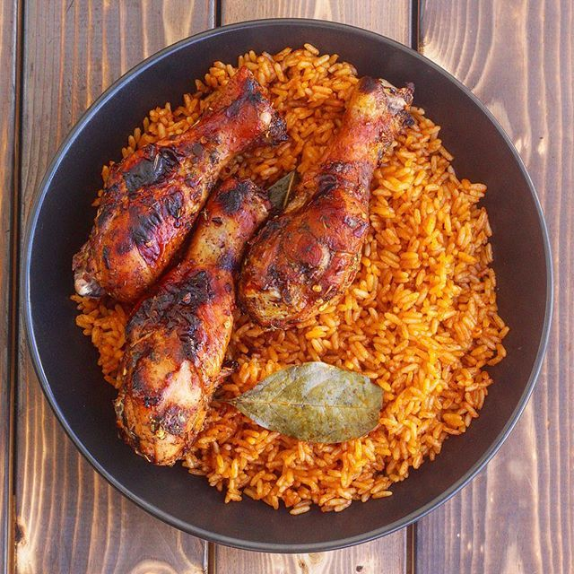

JELLOF RICE RECIPES

how to cook rice at home
Rice is one of the most special delicacy in human time line,
so today we gonna be cooking some thing really special..
Ingredients
- Rice
- salt
- pepper
- Crayfish
- seasoning cube
- palm oil/groundnut oil
- Tomatoes
- chicken stock
- spices
- Bay leaf
Steps
- boil some cups of water for 5 minute
- add your rice, allow to boil for the next 5 minutes
- rewash after it's tender boiled
- heat your pot and add your grinded tomatoes, onion,pepper,
leave it to boil for the next 5 minutes until liquid/ water dry and becomes
a thick tomatoes paste.
- in another pot add 4 cooking spoonful vegetable oil, heat it up, add 1 sliced onion, star
and then add the boiled tomatoes paste, fry for 10 to 15 minutes, stirring ar interval.
- Add the tin tomatoes puree/paste, fry for 5 minutes, add seasonings and bay leaf.
- stir in chicken stock and add 3 cups of water, allow the mixture to boil, add the washed rice
- stir and cook until the rice is soft, add more water if necessary.
- when the rice is soft and the water all dried up, stir and mix until the sauce is well blended
with the rice.
- Serve rice with the fried chicken